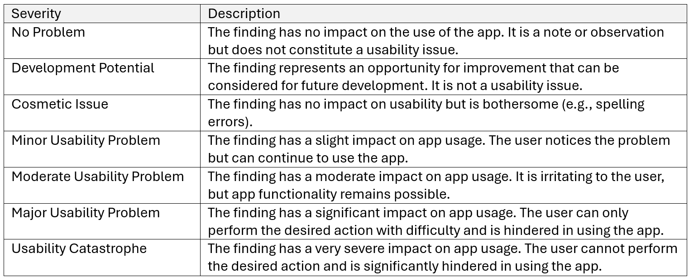
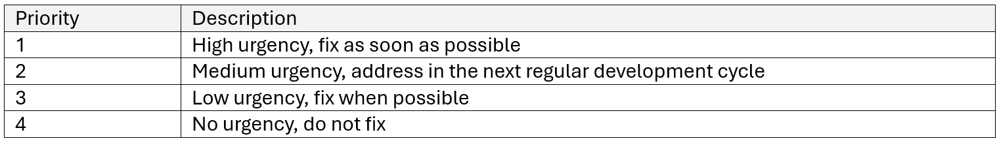
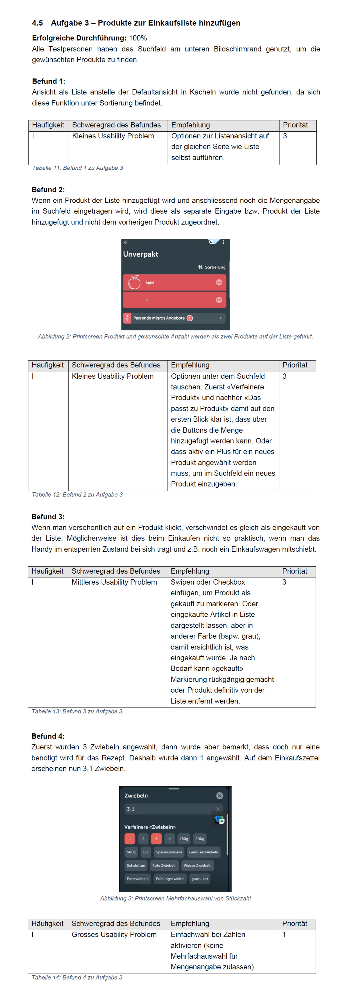
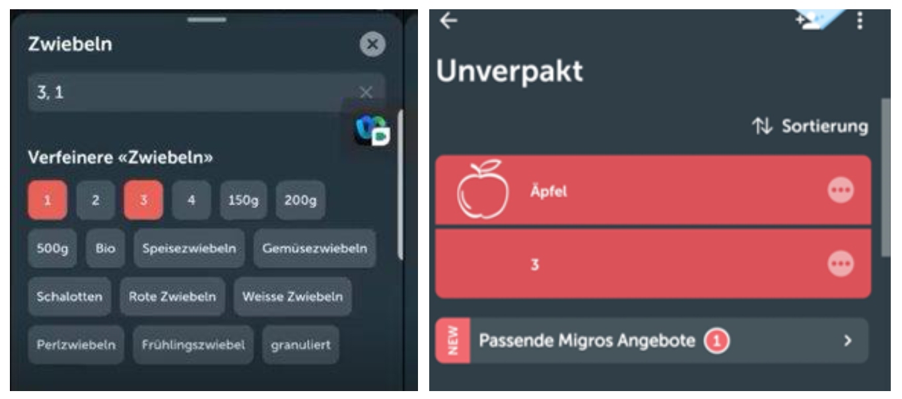

Evaluation of "Bring!"
2021Qualitative Usability Testing
Background
As part of my studies in "Information Science" at the Fachhochschule Graubünden our group of six evaluated the shopping app Bring! for its usability in the context of collaborative shopping through a qualitative usability test in the "Usability Engineering" module.
Disclaimer: I am not affiliated with «Bring!».Test object
The mobile app "Bring!" is developed by the Swiss company «Bring! Labs AG». It offers a free version with ads and a premium version for CHF 18/year, which is ad-free and includes premium support. This evaluation focuses on the free version of the app.
Target audience and usage context
To better understand the target audience of "Bring!" and its usage context, a qualitative study was conducted in October 2021, prior to the usability test. The shopping planning habits of multi-person households were analyzed through interviews with participants from a predefined target group to identify their needs.
Test setup
A qualitative usability test was conducted in November/December 2021, held remotely due to the Covid-19 pandemic. The goal was to evaluate the app's functionality and effectiveness for the target audience.
Participants were observed solving real tasks to identify problems and optimization opportunities. Six digitally savvy individuals, representative of "Bring!'s" target group, were recruited—three familiar with the app and three new users. A test guide with warm-up questions, tasks, and final questions was created. The 30-45 minute test was conducted online via WebEx or Microsoft Teams.
During the test, participants shared their smartphone screens, allowing moderators to follow app usage. Reactions and screens were recorded (with prior consent), and the "Think Aloud" approach provided detailed insights.
Classification of test results
The test results were summarized for each task in a subsection, including the percentage of successful test participants. Findings were explained and rated in a table, with the frequency of each issue noted—using a Roman numeral I for a single mention and VI for all test participants. The severity of the findings was also recorded, with distinctions made among the following severity levels:
Finally, a recommendation was provided for each problem and prioritized using the following table:
The following example shows an excerpt from the detailed evaluation of Task 3, where users were asked to add a few predefined products to the shopping list:
Identified issues and recommendations
Overall, users are very satisfied with the existing functionalities of the app "Bring!", which provides everything needed for creating shopping lists. However, several areas for improvement and development potential were identified. Specifically, two major and three moderate usability issues were found, along with six minor difficulties and three cosmetic issues that do not require immediate action. The main areas affected were the "shopping list" function and the "Offers" feature.
Shopping List
Quantity input (Moderate to Major Usability Problem)
A significant usability issue with the shopping list is the incorrect input of quantities. For instance, a test participant initially entered a quantity of three onions but later decided that one would suffice. The list then displayed the quantity as 3.1. Additionally, a smaller usability issue was identified where another participant tried to add a quantity for apples using the text field. The number was recorded as a separate item on the list instead of being added to the apples.
Notification "product added" (Moderate Usability Problem)
Another issue involved the notifications sent when a list collaborator adds an item to the list. These notifications were delayed and the added products were only marked with a small "NEW" label in the corner. This caused confusion for some test participants, who were unsure where the new items had come from.
Removing items by click (Moderate Usability Problem)
Another issue is that items can be removed from the list with a click. Test participants expressed concerns that items might be accidentally deleted if the phone is carried unlocked, leading to missing items during shopping. Additionally, the click-to-remove action is not intuitive for all users: one participant initially tried to swipe items away and took a moment to realize they could only be removed by clicking.
To address the major and moderate usability issues with the shopping list, the following improvements should be made:
- Quantity input: Allow quantity entries via the search field and prevent multiple selections with quantity buttons.
- Removing items: Implement swipe gestures for removing items from the list instead of clicking to avoid accidental deletions.
- Notifications: Enhance notifications for added items by delivering them promptly and marking new products with the user’s initials or profile picture.
- Sorting options: Enable saving and switching between different sorting options for the shopping list, as users do not always shop in the same store.
Offers
Missing text search field in offers (Major Usability Problem)
A major issue with the "Offers" function is the lack of a text search field. Users can only search through categories and must scroll extensively, which was noted as a significant problem by three of the six test participants. They felt this limitation hindered their ability to use the app effectively.
Offers cannot be specified (Moderate Usability Problem)
Offers and promotions cannot be specified in detail. For example, one participant added a "baby clothing" promotion to the shopping list, which was then listed as "Entire baby and children's clothing assortment." This vague description made it difficult for others to understand and act on the offer effectively.

To address the usability issues in the "Offers" section of the "Bring!" app, the following recommendations are made:
- Add a search field: Implement a search field to allow users to search for offers more precisely.
- Specify offers: Allow users to provide detailed descriptions for general offers, such as "baby clothing," so that they can specify exactly what needs to be purchased, especially for shared shopping lists.
General Findings
Further relevant insights from the usability test, categorized as minor to cosmetic issues, are listed below:
- Advertising and Additional Features: Testers noted that the advertising is too prominent and there are too many additional features. It is recommended to reduce the prominence of ads on the homepage and focus app development more on core functionalities.
- Onboarding Tour: To ease the entry for new users, the project team suggests offering a brief introductory tour. This tour should cover basic functions and provide tips and tricks, addressing issues such as tile vs. list view, dark or light mode selection, renaming, quantity input, and removing items from the list.